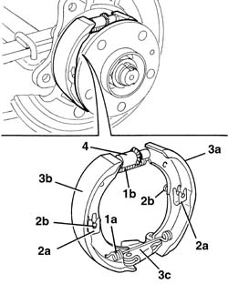

3380C10 HANDBRAKE SHOES - R.R.
- Path
- Procedures > 33 BRAKING SYSTEM > 3380 HANDBRAKE > 3380C HANDBRAKE DEVICE FOR REAR DISC BRAKES > 3380C10 HANDBRAKE SHOES - R.R.
- Kind
- repair procedure (removal / refitting; the operation number is the code)
- Applies to
- all engines; all production periods
- Interactive page
- https://sloeber94.github.io/elrnDB-fDct/en/#/244001154
Applies to: all engines; all production periods
 Removing
Removing
 Refitting
RefittingOp. 3310B30 REAR BRAKE DISCS R R
Op. 3310B50 REAR BRAKE DISCS R R
1. Release the shoe return springs (1a) and (1b) on one side.
2. Release the shoe retaining springs (2a), then remove the pins (2b) from the rear.
3. Remove the shoes (3a) and (3b) releasing them from the handbrake attachment linkage (3c).
4. Separate the shoes from the clearance recovery device.

Applies to: all engines; all production periods
Refitting
Removing- Place the shoes and the clearance recovery device in position.
- Place the handbrake attachment linkage in position.
- Refit the shoe retaining springs and pins in position.
- Attach the shoe return springs.
- Check that the brakes are working.